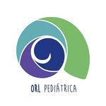

Otorrinolaringóloga Pediátrica · Villa María

Dra. Leticia Eguizábal — Otorrinolaringóloga Pediátrica especializada en salud de oídos, nariz, garganta y trastornos del sueño en niños. Atención en Villa María y La Carlota, Córdoba.
Muchas veces los síntomas no se notan a simple vista, pero pueden afectar mucho más de lo que imaginamos. La consulta a tiempo hace la diferencia.
¿Tu hijo no descansa bien, ronca o se despierta seguido? Los problemas de sueño en niños muchas veces tienen causa ORL. Evaluamos y tratamos el origen real del problema.
Otitis, pérdida auditiva, líquido en el oído medio. Un problema auditivo a tiempo evita dificultades en el habla y el aprendizaje. No esperes a que "se le pase solo".
Congestion, rinitis, adenoides y desviación de tabique. Cuando un niño no puede respirar bien, todo lo demás se complica: el sueño, el juego, la concentración.
Anginas, amigdalitis recurrente, faringitis y ronquidos. Evaluamos si el tamaño de las amígdalas está afectando la respiración y el sueño de tu hijo.
Un bebé puede nacer con pérdida auditiva sin que nadie lo note. La detección temprana es clave para el desarrollo del lenguaje y la comunicación.
Duda puntual, segunda opinión o seguimiento desde casa. Podés consultarme por WhatsApp o videollamada sin necesidad de esperar turno presencial.
Muchos padres esperan meses pensando que el problema va a mejorar solo. En ORL pediátrica, la consulta a tiempo puede evitar cirugías, pérdida auditiva permanente o años de dificultades en el desarrollo.
Escribime por WhatsApp o completá el formulario y te respondo para coordinar la consulta.
3534 22-0909
Villa María y La Carlota, Córdoba
@dra.leticiaeguizabal